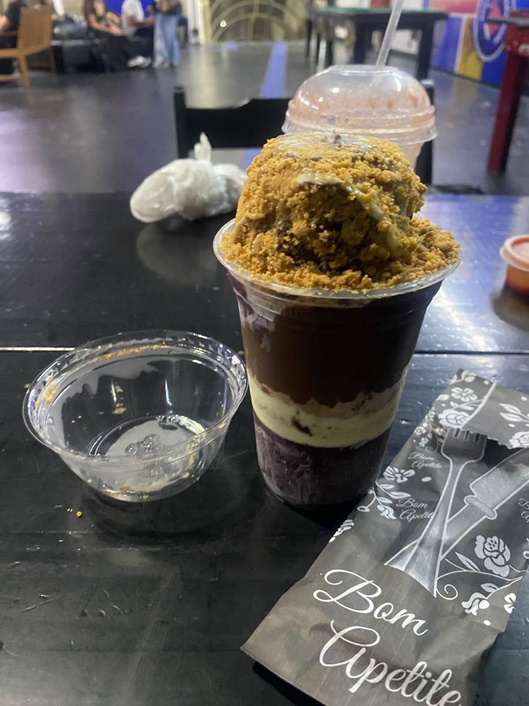
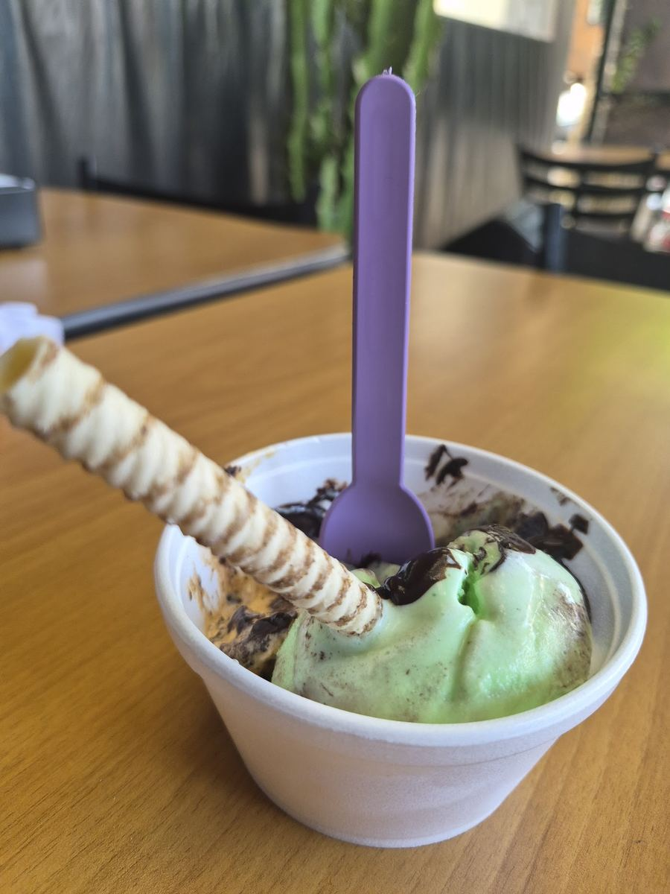
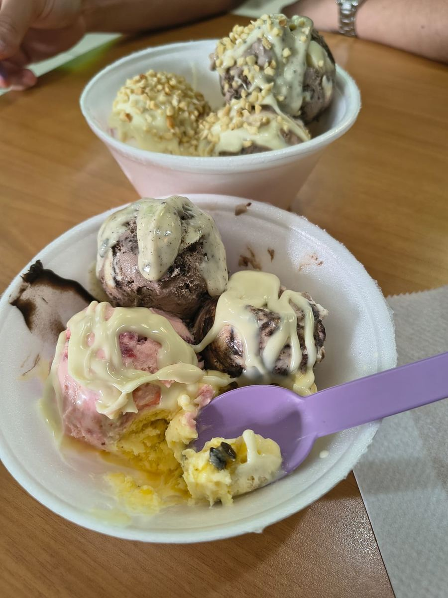
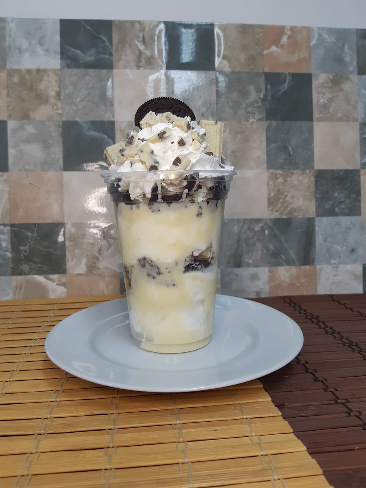
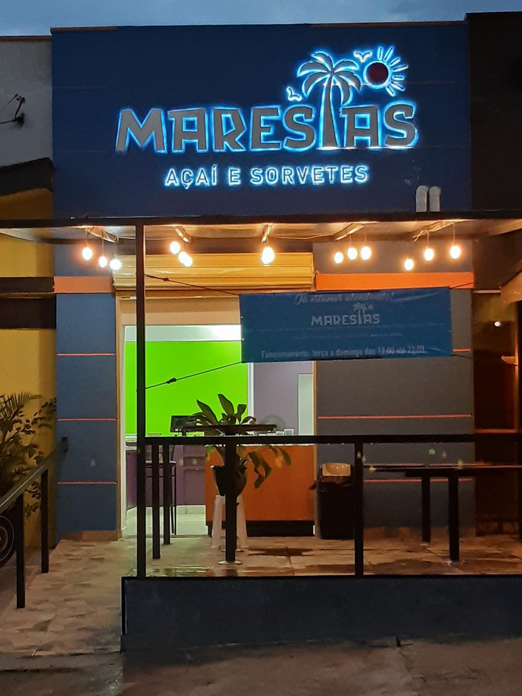

Cambuí · fabricação própria
Gelado de verdade, feito aqui.
Açaí e sorvete artesanal de fabricação própria, sem emulsificante e com sabor marcante. Monte o seu copo, escolha uma taça ou leve um pote. No salão, para retirar ou no delivery.
Seg a sex 12h às 21h · fim de semana 13h às 22h


Por que é diferente
Da nossa fábrica pro seu copo
Açaí próprio
Batido na casa, com linha tradicional e opção sem adição de açúcar.
Sorvete artesanal
Sem artificialidade nem emulsificante: cremosidade e sabor de verdade.
Montado na hora
Cremes de Ninho, Nutella, Ovomaltine e pistache, milkshakes e taças.
O cardápio
Sabores que fazem voltar
Açaí e cupuaçu
Açaí tradicionalSem adição de açúcarCupuaçuMorango clássico
Sorvetes da casa
Iogurte com amarenaLeite Ninho trufadoTorta de maracujáPistachee mais sabores no balcão
Taças
SundaeBanana splitUla UlaMilkshakes


Bateu o calor?
O cardápio online tem tudo, com retirada ou entrega. Aceita cartão, Pix, dinheiro e vales.
4,9 · 217 avaliações no Google
Parada obrigatória
Viemos pelos sorvetes, que são tão bons quanto o açaí. A cremosidade e a falta de artificialidade e emulsificantes tornam a Maresias uma parada obrigatória em Campinas.Felipe · Google
Simplesmente o melhor açaí que já comi! Sempre peço pelo iFood: vem caprichado e bem embalado, com todo cuidado.Kevely · Google
Com esse calor, quer um sorvetinho? Recomendo a Maresias: atendimento muito bom e qualidade nos sabores.Alexandre · Google

Onde fica
Barreto Leme, 2336
| Segunda a sexta | 12h às 21h |
| Sábado, domingo e feriado | 13h às 22h |
R. Barreto Leme, 2336, loja B · Cambuí, Campinas (SP)
WhatsApp (19) 98374-8039 · @maresias.oficial
Wi-fi grátis · acessível